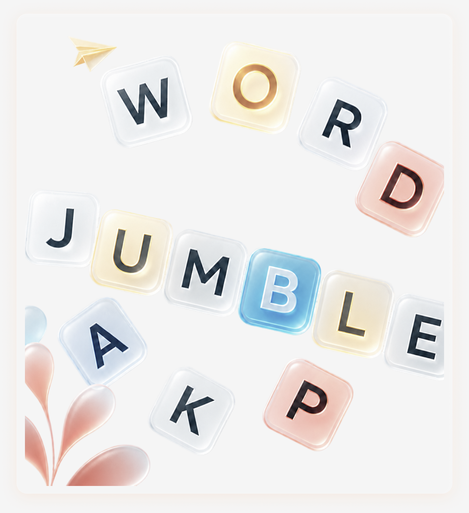
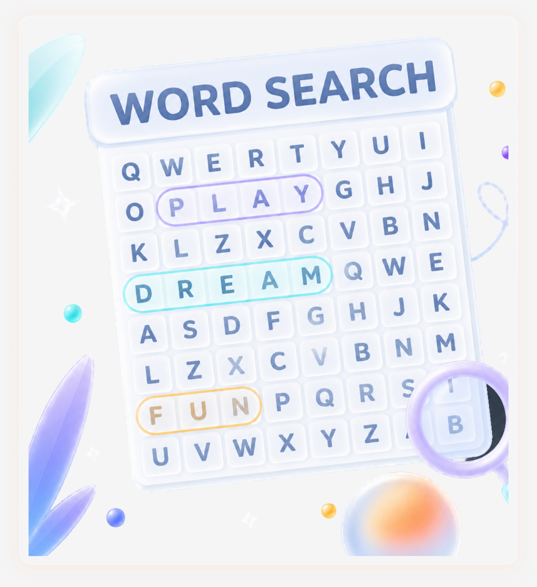
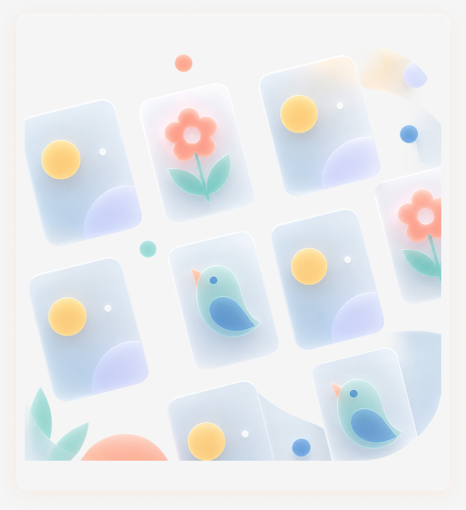
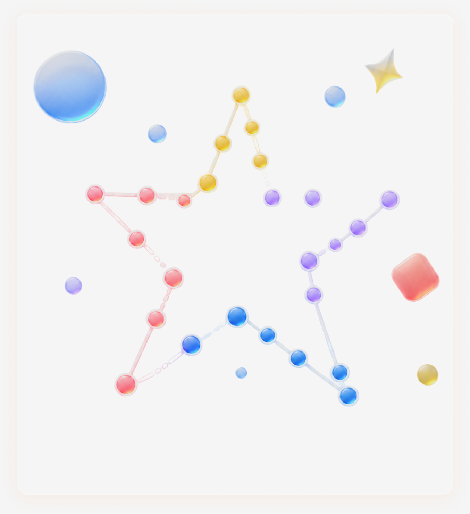
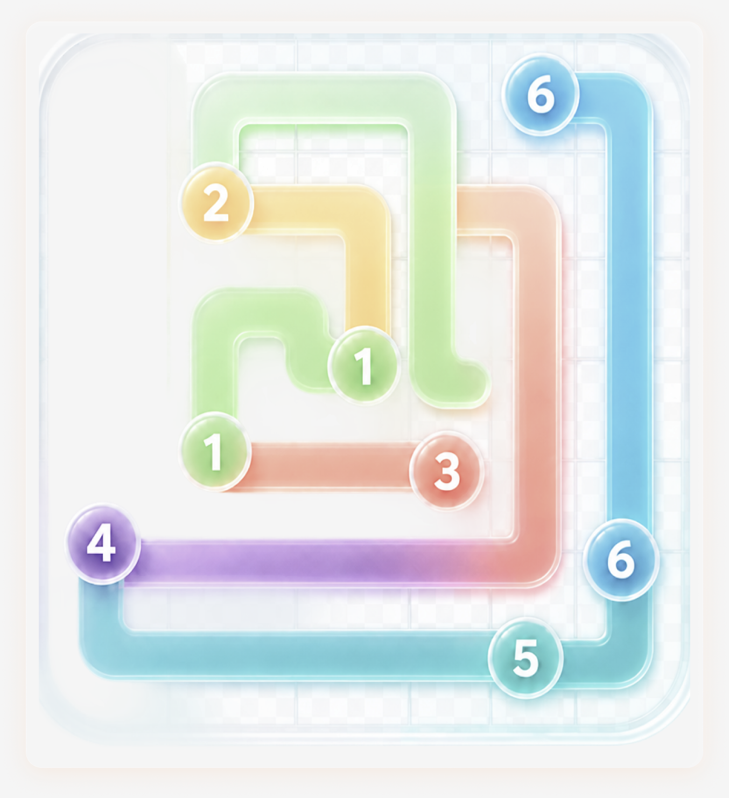
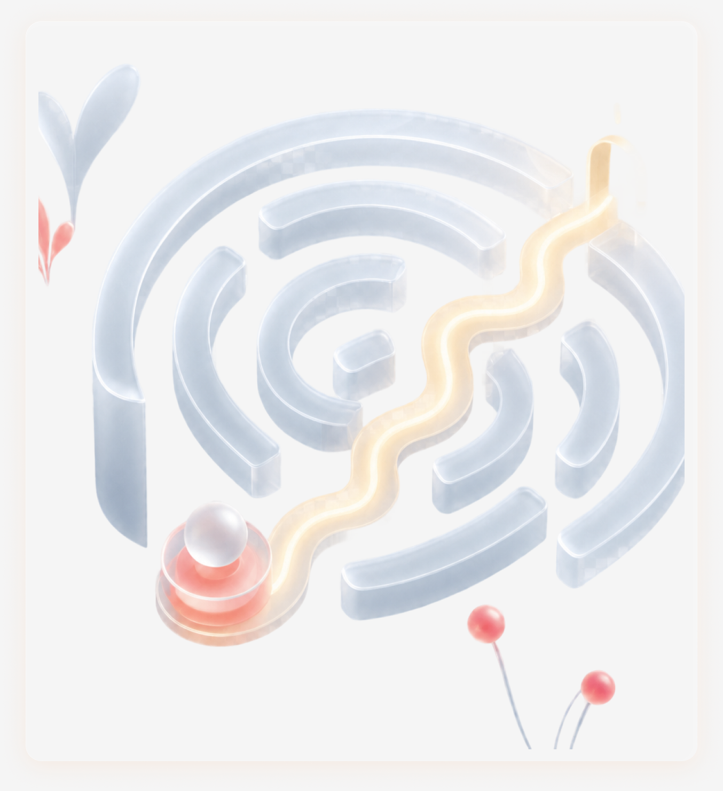
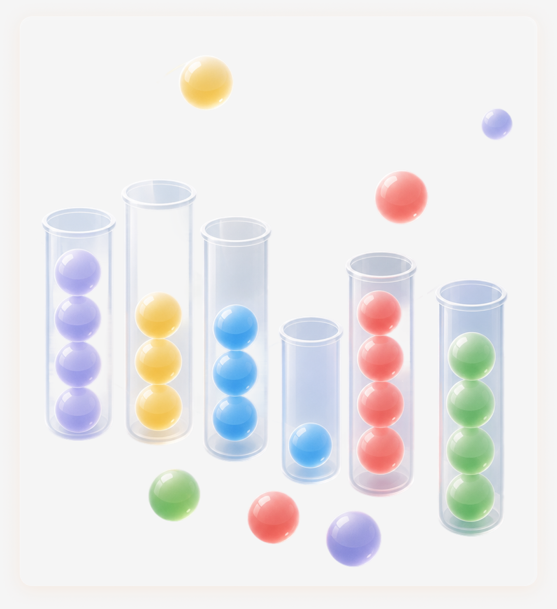
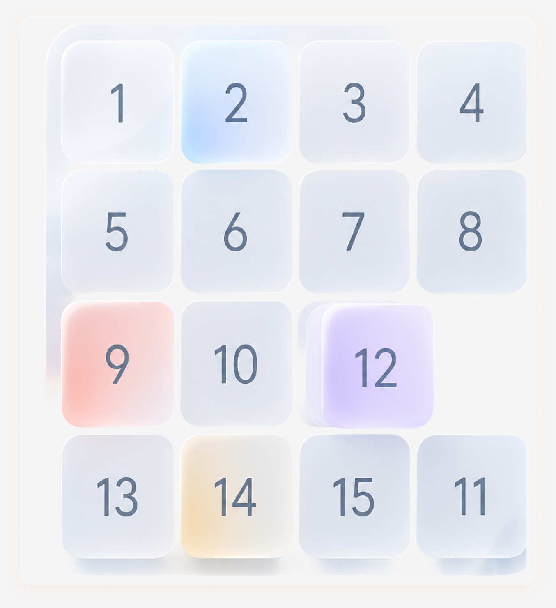
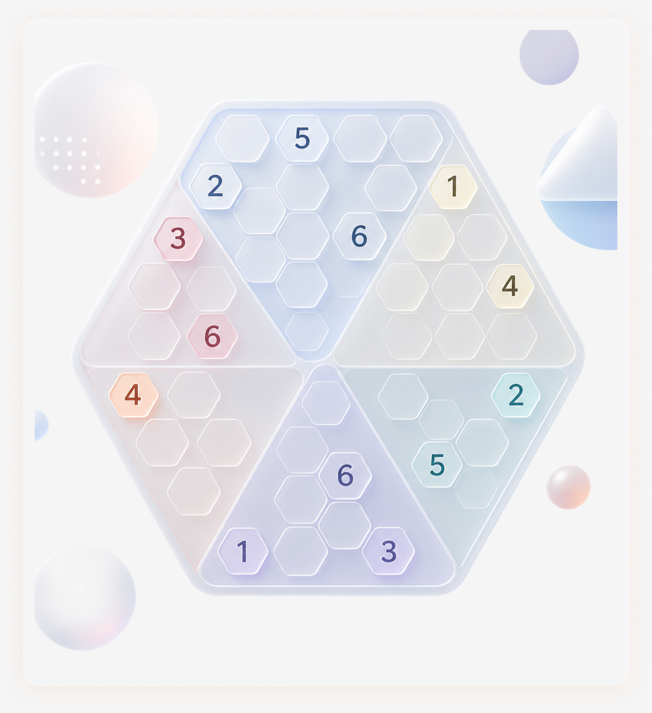

kai.morning
kai.morningslow start · coffee · window light
You reach for your phone 96 times a day, and mostly on autopilot. Pause sits between you and your most distracting apps with a simple puzzle.
A quick word puzzle. Not willpower — just a moment of intention. Solve and the app unlocks for fifteen minutes.
You chose to open it, so use it the way you meant to. When the fifteen minutes are up, the pause comes back on its own.
You may solve another puzzle if you wish, but the app is there to remind you that there are other things to enjoy outside of the scroll.
A different kind of calm for every reach.









See how many times you walked away, how much you reclaimed, and your streak.
My screen time has significantly reduced — but most importantly, the urge to scroll and open social media apps has significantly reduced.
I often found myself mindlessly scrolling on social media for hours. Pause has been the perfect barrier my brain needed to break that habit.
That tiny bit of friction is enough to make you stop and ask "do I actually want to scroll right now?" Half the time I just close my phone.
I miss the puzzles, the cognitive stimulation, and the barriers it places between my fingers' impulses and the doomscrolling apps. 10/10 recommend.
Yes — Pause offers a free, ad-supported version. You also get a 7-day free trial of the premium version, which unlocks all nine puzzles and removes ads.
Not yet. Pause is built on Apple's Screen Time technology, so it's iPhone-only for now.
Screen Time blocks an app outright behind a settings menu. Pause adds a small puzzle in the moment instead — so opening a paused app becomes a choice, not a reflex.
Yes. Removing Pause removes every restriction immediately — nothing about your apps is permanently changed.
Any app, category, or website — you choose during setup, and you can change your list anytime from Settings.
Yes. Pause uses Apple's Screen Time framework, and the apps you choose never leave your device.